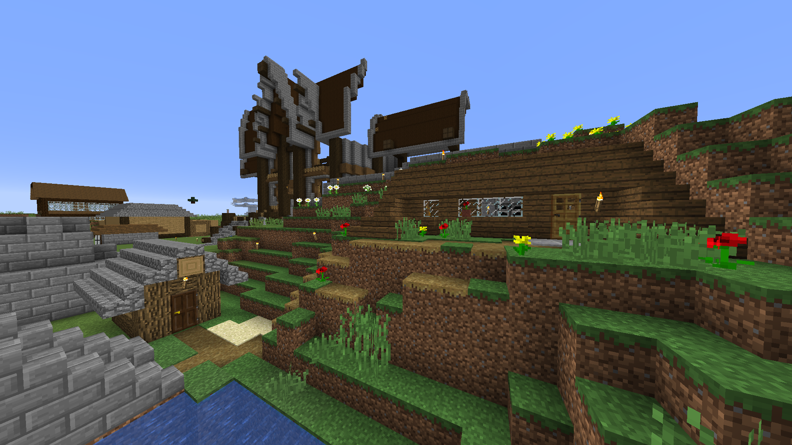

Karl

Karl anslöt sig till servern efter ett kort tag. Han byggde sitt första och nuvarande hus i berget vid närmaste villaget. Några av de första grejerna Karl gjorde var att bygga en liten kycklingfarm som konkurerar med både Manfreds och Melkers kycklingförsäljning. Han byggde också ett plakat där serverns medlemmar kan köpa skyltar för att göra reklam för sina olika affärer. Karls hus
Karls största projekt var tillsammans med Manfred då de tillsammans byggde en stor Witherkskelettfarm i Nether. Manfred valde självklart ett fortress som var djupt inne i en stor bergmassa och därför blev det väldigt jobbigt att spawnproofa runtomkring.
Karl har även haft lite bråk med Gustaf då han byggde en jättestor mansion bredvid Karls hus. Karl tyckte detta var intrång på hans tomt. Därför bestämdes det att huset skulle rivas.